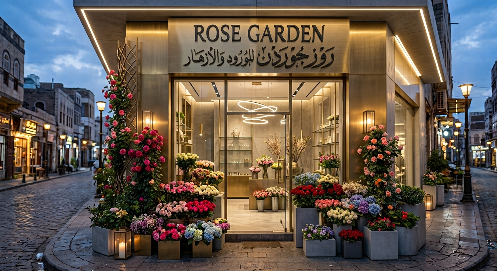

متجر روز جاردن
الرئيسية
|
الورود
|
تواصل معنا
مرحبًا بكم في متجر روز جاردن
نقدم أجمل الورود الطبيعية بأجمل التصاميم لجميع المناسبات.

شاهد جمال ورودنا 🌸
موسيقى هادئة
لماذا تختار متجرنا؟
- ورود طبيعية وطازجة.
- تنسيقات مميزة للمناسبات.
- تغليف هدايا أنيق.
- خدمة سريعة.
"الورود تضيف جمالًا وسعادة لكل لحظة."